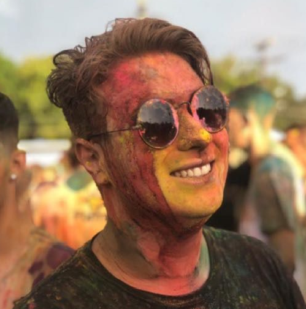

- Home
- >
- Currículo
Currículo
Dados Pessoais

Nome:
José Eduardo Izidoro Júnior
Data de Nascimento:
28/04/2002
Residência:
Itajubá-MG
Idiomas:
Português (Nativo)
Inglês (Avançado)
Sobre Mim
Olá, agradeço a visita, sou estudante de Engenharia de computação, ingressei no curso no ano de 2021. Sou apaixonado por música (apesar de não ter dom nenhum para a música), sou escultor de literalmente qualquer coisa, apaixonado por vinho e concerteza uma roda de conversa.
Comecei no vestibular escolhendo uma engenharia e me apaixonei logo de cara pela computação e tudo o que envolve esse mundo maravilhoso, viciado em assistir videos e em ter um futuro na engenharia e na programação, sendo principal a busca por liderar e gerenciar pessoas nessas áreas unidas.
Minha família me apoia muito e ama minhas "traquinagens" na internet e na construção e invenção de ideias novas no momento de solucionar problemas, seja concertando um ralador até construindo algo que eu não quero comprar.
Educação
2020-Finalizado
Ensino médio - Objetivo Araraquara
2021 - Em andamento
Engenharia de Computação - Unifei (U. federal de Itajubá)
Itajubá - MG - Campus Itajubá
Habilidades
Programação
Gamer designer - Programação em C, C++, C# - futuro D. Mobile
Cozinheiro
Conhecimento em técnicas Francesas e Italianas de culinária
Escultor
Escultor de personagens de games e geeks
Experiência de Trabalho
2021 - 2021
Gamer Designer - Dev-u
2022 - 2025
Desenvolvedor Mobile - Asimov
Contato
eduardojrizidoro@gmail.com
+55 (16) 99622 - 1363


←Voltar ao início